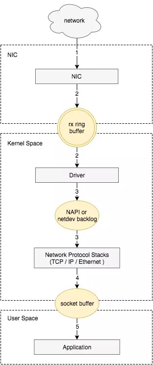
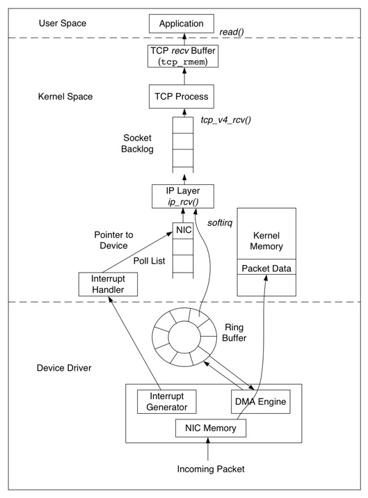
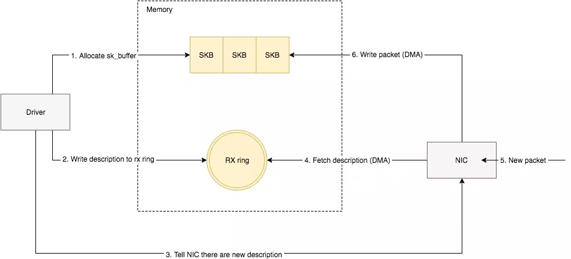
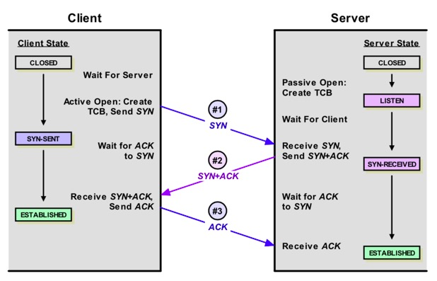
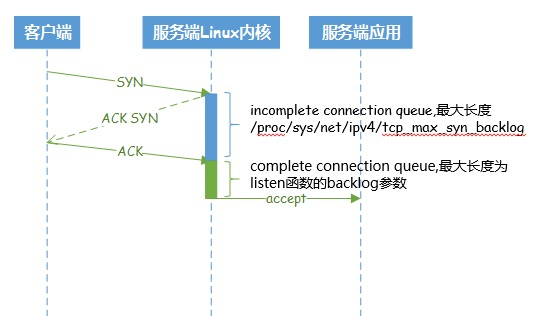

一 Linux数据包接收的完整路径梳理
- 网卡Driver层面
- 1.1 网卡接收到数据包
- 1.2 将数据包从网卡硬件转移到主机内存中.
- 内核层面
- 2.1 TCP/IP 协议逐层处理
- 应用程序层面
- 3.1 应用程序通过read()系统调用,从socket buffer读取数据
通过2幅图来展示下这个过程:
- 总体说明的图

- 详细的图

二 作为运维,可以做哪些调优
(一) 网卡Driver层面
- Driver会提前申请好一片内存区域,作为缓冲区来接收数据包.叫做sk_buffer(socket kernel buffers) 换一种说法: Linux内核使用sk_buff(socket kernel buffers)数据结构描述一个数据包。 我们可以理解为这片缓冲区足够大(实际上,现代的Linux服务器内存都足够大,够存放这些数据包了)
- Ring Buffer 网卡环状缓冲区. 可以理解为网卡的缓存. 这片区域的大小是网卡厂商决定的(不同的网卡厂商、不同系列的网卡都是有区别的)，并且大小不能随意调整,或者说它的大小是固定的。 但是就像家用吹风机可以开大档和小挡一样（大档风大，小档风小），Ring Buffer也可以调整成最大档,运维人员至少可以把Ring Buffer调整成大档.
- Ring Buffer和前面说的sk_buffer是什么关系呢? sk_bffer是用于存储实际数据包的，Ring Buffer用于存储实际数据包的指针
那么网卡Driver层面，整个数据包接收的过程如下:

- 驱动程序事先在内存中分配一片缓冲区来接收数据包,叫做sk_buffer.
- 将上述缓冲区的地址和大小（即接收描述符），加入到rx ring buffer。描述符中的缓冲区地址是DMA使用的物理地址;
- 驱动程序通知网卡有新的描述符(或者说有空闲可用的描述符)
- 网卡从rx ring buffer中取出描述符,从而获取缓冲区的地址和大小.
- 当一个新的数据包到达，网卡(NIC)调用DMA engine,(此时网卡已经通过ring buffer的描述符知道对应的内存地址了)，把数据包放入sk_buffer. 并且我猜测这个过程中，包含了申请使用描述符和释放描述符的过程. 如果整个过程正常,网卡会发起中断，通知内核的中断程序将数据包传递给IP层，进入TCP/IP协议栈处理，TCP/IP协议栈处理。 每个数据包经过TCP层一系列复杂的步骤，更新TCP状态机，最终到达socket的recv Buffer，等待被应用程序接收处理。有一点需要注意，数据包到达recv Buffer，TCP就会回ACK确认，既TCP的ACK表示数据包已经被操作系统内核收到,但并不确保应用层一定收到数据（例如这个时候系统crash）
然后,内核应该会把刚占用掉的描述符重新放入ring buffer，这样网卡就可以继续使用描述符了。
作为运维人员，我们看到，这里最简单的优化就是把ring buffer调到最大，给上层（应用程序层面）尽可能多一点时间处理数据包.
可以使用ethtool命令，进行Ring Buffer的查看和设置.
1 查看网卡当前的设置(包括Ring Buffer): ethtool -g eth1
2 改变Ring Buffer大小: ethtool -G eth1 rx 4096 tx 4096
(二) TCP/IP协议栈层面
此时数据包已经接入内核处理区域，由内核的TCP/IP协议栈功能处理
1 Ring Buffer 到 TCP/IP协议栈之间还有一个Input Packet Queue(数据包接收队列)
Linux系统中广泛使用各种缓冲技能，而缓冲技能常常由队列实现。
- 当接收数据包的速率大于内核TCP处理包的速率，数据包将会缓冲在TCP层之前的队列中。接收队列的长度由参数net.core.netdev_max_backlog设置。 我们可以适当加大这个值.
大家知道，两个基于tcp协议的socket要通信，首先要进行连接建立的过程，然后才是数据传输的过程。
2 连接建立

简单看下连接的建立过程，客户端向server发送SYN包，server回复SYN＋ACK，同时将这个处于SYN_RECV状态的连接保存到半连接队列。客户端返回ACK包完成三次握手，server将ESTABLISHED状态的连接移入accept队列，等待应用调用accept()。 可以看到建立连接涉及两个队列：
- 半连接队列(SYN Queue): 保存SYN_RECV状态的连接。队列长度由net.ipv4.tcp_max_syn_backlog设置
- 完整连接队列(ESTAB Queue):保存ESTABLISHED状态的连接。队列长度为min(net.core.somaxconn, backlog)。其中backlog是我们创建ServerSocket(int port,int backlog)时指定的参数，最终会传递给listen方法：
#include
int listen(int sockfd, int backlog);
如果我们设置的backlog大于net.core.somaxconn，完整连接队列的长度将被设置为net.core.somaxconn。

注意：不同的编程语言都有相应的socket申请方法,比如Python是socket模块.在服务端监听一个端口，底层都要经过3个步骤： 申请socket、bind相应的IP和port、调用listen方法进行监听。这个listen方法python会进行封装，别的编程语言也会进行封装，但最终都是调用系统的listen()调用
我们对这两个队列做一下总结:
| 队列名称 | 说明 | 中文说明 | 常用优化技能 |
|---|---|---|---|
| 半连接队列(incomplete connection queue) | Maximal number of remembered connection requests, which have not received an acknowledgment from connecting client. | 还没有被客户端返回ack的对列的长度。 | 1. 最大长度由/proc/sys/net/ipv4/tcp_max_syn_backlog参数决定，并且用户不能控制其长度。 2. 开启net.ipv4.tcp_syncookies，防范少量的tcp syn攻击。 |
| 完全连接队列(complete connection queue) | the queue length for completely established sockets waiting to be accepted | 已经握手完成，但还没有被accepted的队列. | 1. 内核限制，该队列长度不能超过net.core.somaxconn，用户可以控制这个队列的长度。2. 加大相应队列的最大长度。 |
3. 数据传输
连接建立后,就到了socket数据传输的层面。此时kernel能够为应用程序做的，有一个socket Recv Buffer, 也就是接收缓冲区.
3.1 Recv Buffer自动调节机制
kernel可以根据实际情况，自动调节Recv Buffer的大小,以期找到性能和资源的平衡点. 当net.ipv4.tcp_moderate_rcvbuf设置为1时，自动调节机制生效，每个TCP连接的recv Buffer由下面的3元数组指定(min, default, max)：
net.ipv4.tcp_rmem = 4096 87380 16777216
最初Recv Buffer被设置为87380，同时这个缺省值会覆盖net.core.rmem_default的设置,随后recv buffer根据实际情况在最大值和最小值之间动态调节。 当net.ipv4.tcp_moderate_rcvbuf被设置为0，或者设置了socket选项SO_RCVBUF，缓冲的动态调节机制被关闭。recv buffer的缺省值由net.core.rmem_default设置，但如果设置了net.ipv4.tcp_rmem，缺省值则被覆盖。可以通过系统调用setsockopt()设置recv buffer的最大值为net.core.rmem_max
3.2 如果关闭Recv Buffer自动调节机制
如果把net.ipv4.tcp_moderate_rcvbuf被设置为0,同时socket自己也没有设置SO_RCVBUF选项，那么一个socket的默认Buffer 大小将有net.core.rmem_default决定。
因此，我们可以得出如下总结:
-
当应用程序使用系统调用setsockopt()，是可以自定义Recv Buffer大小的，因此我们应该把net.ipv4.tcp_rmem中max值和net.core.rmem_max值设置成一致，这样假设应用程序没有关注到这个点，仍然可以由kernel把它自动调节成最大的Recv Buffer
-
Recv Buffer的默认值，也可以适当进行提高。包括net.core.rmem_default和net.ipv4.tcp_rmem中的default设置
-
如果不明确如何优化，至少可以打开net.ipv4.tcp_moderate_rcvbuf=1,这样kernel会自动调整socket的Buffer
(三) 关于Linux接收数据包链路优化的整体总结
| 序号 | 数据接收阶段 | 常用优化技能 |
|---|---|---|
| 1 | 网卡Ring Buffer | 根据不同的网卡类型，把Ring Buffer设置成最大 |
| 2 | 网卡Ring Buffer和系统TCP/IP栈之间 | 使用net.core.netdev_max_backlog,调大Input Packet Queue |
| 3 | 半连接队列 | 开启net.ipv4.tcp_syncookies，防范少量的tcp syn攻击 |
| 4 | 完整连接队列 | 通过net.core.somaxconn,调大一些队列长度,给应用程序以更多处理时间 |
| 5 | Socket Recv Buffer | 开启net.ipv4.tcp_moderate_rcvbuf=1,并且把net.ipv4.tcp_rmem/net.core.rmem_max中默认值和最大值调大 |